Context
As part of a previous project, Google and Apple sign up methods had been added to the Songkick web sign up screen—a change which contributed to a ~30% increase to the overall sign up rate.
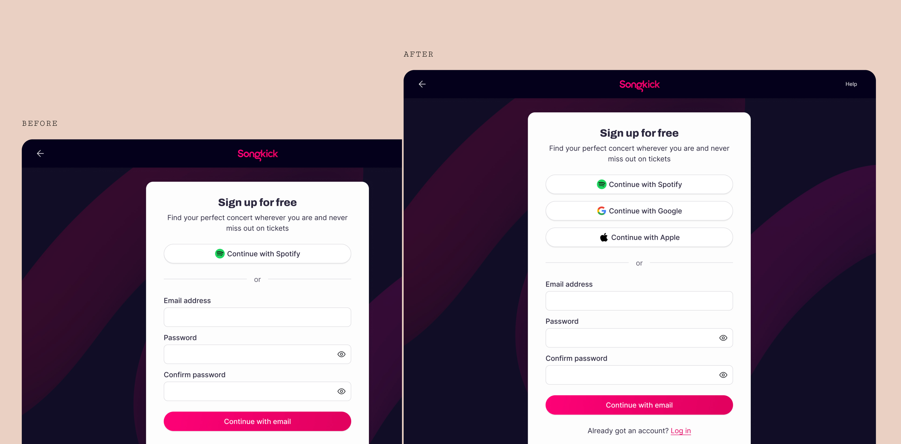
The new sign up screen features Google and Apple sign up methods...
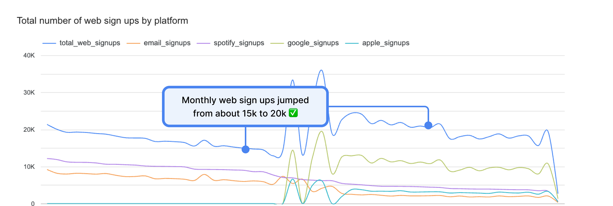
...which lead to a significant increase in sign ups.
Whilst ostensibly a successful new feature...
...a large percentage of the users who were previously signing up with Spotify were now using Google instead.
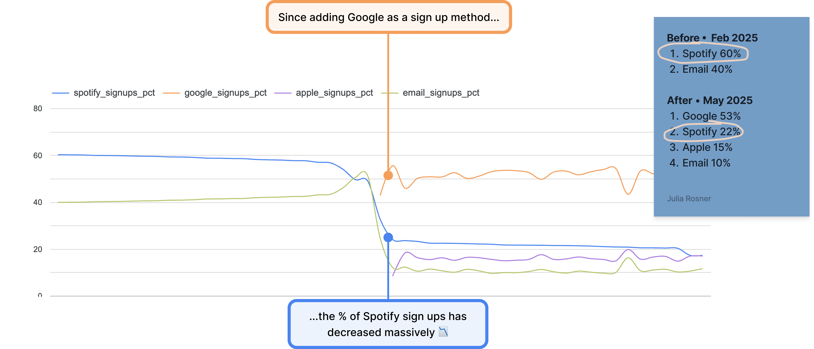
The issue
On Songkick, using the Spotify authentication as opposed to any other sign up method results in a journey that is different in one key aspect: When signing up with Spotify, authentication and artist tracking can be completed in a single, efficient step:
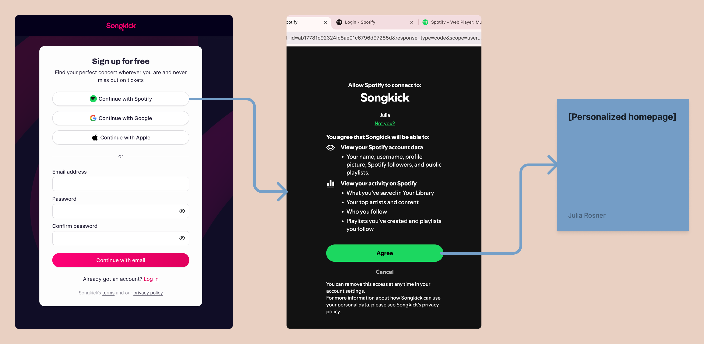
When signing up with another method..
...tracking artists is done as a separate step following authentication. A screen is shown after authentication prompting users to either connect with Spotify, or track artists manually:
Diagnosing the problem
As part of the previous work, the number of total sign ups had been tracked closely—but whether or not the new sign up methods had actually moved the needle on activated users had not been investgated fully. On a hunch I dug into the data, observing that since adding Google and Apple, the number of users completing a Spotify sign up (any sign up method) had halved:
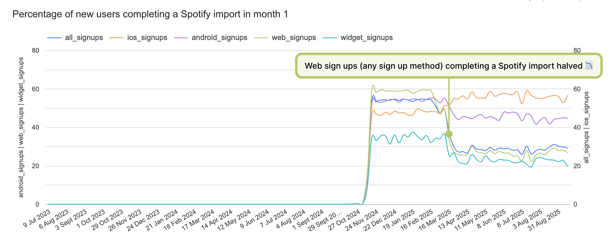
Meaning that this screen,
prompting users who did not sign up with Spotify to track artists, was not working very well:
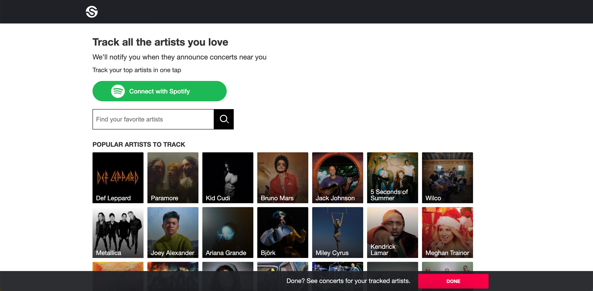
The core issues with this page are easily identified: 1) The Spotify button lacks context/is presented as optional. 2) The button competes with search bar and other artist listings. 3) The core value prop is hidden/unclear.
As a result,
only 4% of non-Spotify sign ups track 30+ artists in month 1. The number of artists tracked by users is a key activation criterion for Songkick—tracking at least 30 artists ensures the users' home feed is sufficiently personalized, with regular email and app notifications of new tour announcements bringing the user back to the product.
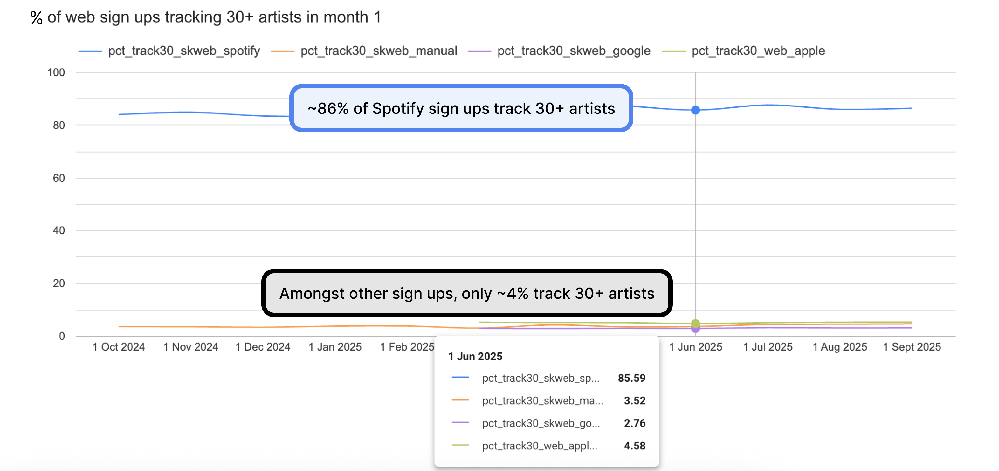
Getting the team onboard
Having identified the issue I laid out my findings, as well as a proposed experiment in a one-pager doc, working with my product and engineering partners to develop this into a full experiment plan.
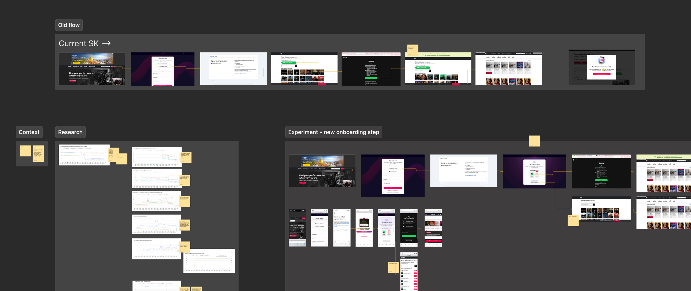
The Experiment
We developed an experiment in which we would add an additional step after the sign up screen, asking users which music service they currently used. On clicking Spotify, an authentication screen would be shown and a taste import would be triggered. If the user chose the 'Find artists manually' option, they'd be linked to the old screen, now without the Spotify button and focused on the manual artist search only:
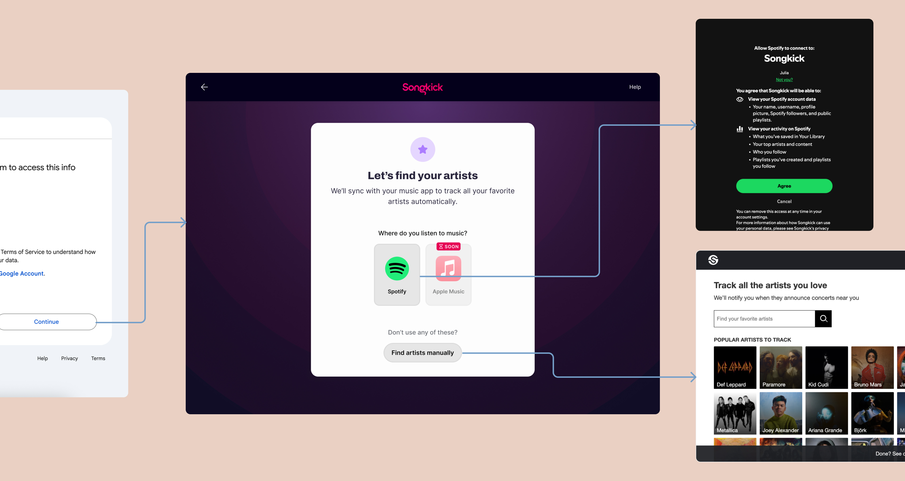
Results after one week
Overall, the experiment was very successful, resulting in gains across a few key metrics. It did however also result in a slightly lower sign up conversion rate, likely due to some new friction introduced by the additional onboarding step:
| KPI | Old rate | Since adding Google/Apple | Experiment |
|---|---|---|---|
| Non-Spotify sign ups connecting with Spotify | 3% | 3% → 0pp | 32% ↗ 29pp |
| % of new users tracking 30+ artists | 50% | 24% ↘ 26pp | 38% ↗ 14pp |
| Sign up → Onboarding complete | 74% | 81% ↗ 7pp | 77% ↘ 4pp |
Open questions
At this point, we had a few follow-up questions we wanted to investigate further: Should we add more taste imports to account for non-Spotify users? Should we encourage more users to choose the Spotify sign up earlier in the funnel?
Experiment #2
To follow up on the first open question, we ran a ‘fake door’ experiment to help us gauge whether or not adding additional taste imports (any of which would be a significant piece of work) would result in a higher activation rate. In addition to the Spotify option, we added a number of other music services from YouTube music to Tidal. Clicking on any of these options would link users to the Manual Tracking screen, with a note to explain that this particular service wasn't available yet.
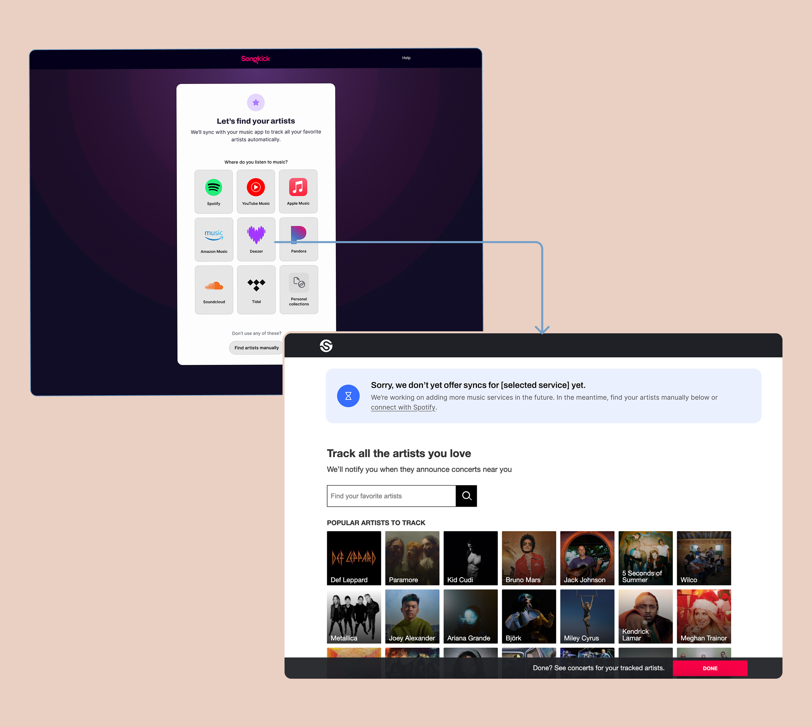
Results after 24 hours
We ran this experiment for only 24 hours, seeking to minimize the amount of frustration users would experience. We kept a close eye on our key metrics, none of which moved significantly (as expected):
| KPI | Old rate | Since adding Google/Apple | Experiment #1 | Experiment #2 |
|---|---|---|---|---|
| Non-Spotify sign ups connecting with Spotify | 3% | 3% → 0pp | 32% ↗ 29pp | 32% → 0pp |
| % of new users tracking 30+ artists | 50% | 24% ↘ 26pp | 38% ↗ 14pp | 38% → 0pp |
| Sign up → Onboarding complete | 74% | 81% ↗ 7pp | 77% ↘ 4pp | 76% ↘ 1pp |
Insights
Instead, this experiment gave us valuble insight into which music services our users would be most interested in. Spotify was the clear winner, with YouTube Music in second place.
We also observed some interesting regional differences: YouTube Music in 2nd place in most places, but not the UK; Spotify is especially strong in the US; Amazon Music and Apple Music each take 3rd place about 50% of the time; Deezer is strong in France and Brasil.
| Music service | CTR |
|---|---|
| Spotify | 48% |
| YouTube Music | 15% |
| Apple Music | 9% |
| Amazon Music | 8% |
| Deezer | 7% |
| Pandora | 5% |
| Soundcloud | 4% |
| Tidal | 2% |
Thinking ahead—experiment #3
An experiment we had planned out but didn't get to run focused on the second of our open questions. Since a large percentage of Spotify users chooses to sign up with Google/others rather than Spotify, can we catch Spotify users earlier in the funnel? Or, would this be too great a friction point for non-Spotify users?
I designed an experiment in which the Spotify sign up method would be the only method shown on the sign up screen, alongisde a 'Recommended' flag. A 'more options' accordeon would reveal the additional sign up methods.
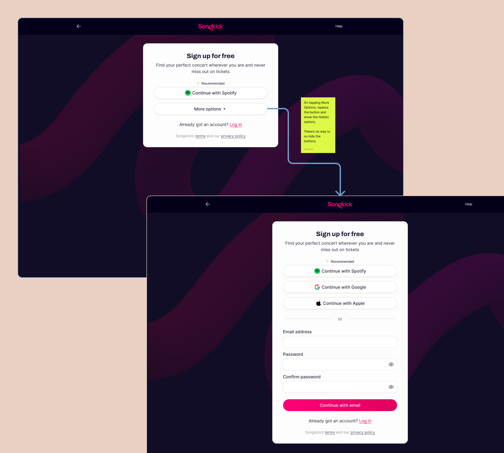